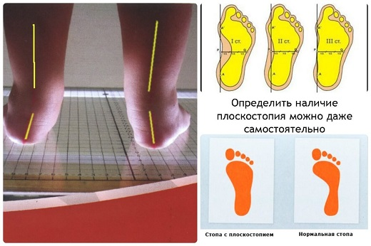
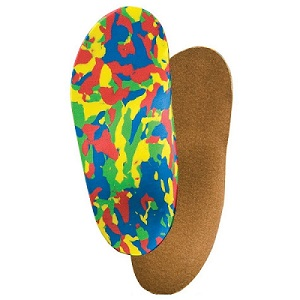

Плоскостопие (также известное как pes planus) — это распространенное среди детей явление, являющееся следствием недоразвитости арки стопы. У большинства малышей это временная, безболезненная и безобидная стадия развития. Все младенцы рождаются со ступней, нижняя часть которой имеет форму блина. У большинства арка начинает формироваться к 3 годам. У некоторых детей арка не развивается, и стопа остается плоской. Степень плоскости может сильно различаться от умеренно выраженной до тяжелой.
ПРОВЕРКА НА ПЛОСКОСТОПИЕ
Ваш врач — и вы — можете определить степень плоскостопия вашего ребенка с помощью этих трех простых тестов:
Тест «стойка на пальчиках». Попросите своего ребенка встать на пальчики. Если во время этого теста появляется арка, это, скорее всего, означает, что плоскостопие не будет доставлять проблем в дальнейшем.
Тест «пронация», вращение внутрь. Разуйте ребенка и встаньте позади него на твердую поверхность. Представьте прямую линию, идущую вниз от ахиллова сухожилия к полу (или поместите вдоль сухожилия по направлению к полу линейку). Если линия или линейка перпендикулярны полу и соприкасаются с ним позади голеностопного сустава, маловероятно, что плоскостопие доставит ребенку неприятности или потребует лечения. Однако если линия наклоняется внутрь таким образом, что линейка соприкасается с полом возле внутренней части голеностопного сустава ребенка, это называется «пронация», что означает, что участок стопы, где должна быть арка, загибается внутрь и соприкасается с полом.
Тест «мокрые ноги на полу». Внимательно проследите за тем, как ваш ребенок ходит по полу мокрыми ногами. Если арка имеет надлежащий размер, пол в этом месте должен быть сухим. Если ступни плоские или имеют пронацию, место арки оставит такой же мокрый отпечаток, как и вся стопа.
Иногда плоскостопие возникает вследствие неправильного формирования некоторых костей ступни или голеностопного сустава. В этом случае врач может направить вашего ребенка на рентгенографию, сканирование костных тканей или магнитно-резонансную томографию стоп, чтобы обследовать их кости и связки.

КОГДА СТОИТ БЕСПОКОИТЬСЯ
У детей младше 3 лет только в редких случаях требуется принимать меры. Похоже, что в вопросе лечить или не лечить плоскостопие у детей от 3 до 4 лет существует два подхода. Большинство детских ортопедов следуют консервативному подходу и редко берутся его лечить.
СОВЕТ ДОКТОРОВ СИРС: ЧЕМ ЛУЧШЕ РЕБЕНОК РАЗВИТ ФИЗИЧЕСКИ, ТЕМ БОЛЕЕ «УДОБНЫЕ» У НЕГО СТУПНИ Ожирение усугубляет последствия развития костей в пронацию, или плоскостопие. Если у ребенка уже наблюдаются вывернутые внутрь колени из-за «запавших арок», дополнительный вес создает двойную нагрузку на голеностопные и коленные суставы. Мы рекомендуем как ортопедическую обувь, так и обувь с усиленной пяткой на то время, пока дети с лишним весом проходят программу по контролю над весом, или до окончания нормального этапа вытягивания в процессе полового созревания. |
С другой стороны, большинство врачей-ортопедов, специализирующихся на лечении заболеваний стоп, рекомендуют применение ортопедических аппаратов у детей в возрасте от 3 до 5 лет, в зависимости от степени пронации. В течение многих лет мы наблюдали тысячи детей с плоскостопием и, опираясь на свой опыт, заняли сторону второго типа врачей и стали более радикальными в вопросах лечения. Основываясь на опыте, мы делаем следующие предложений:
• Пока вашему ребенку не исполнилось 3 года, просто наслаждайтесь стопами без арок. Не беспокойтесь и ничего не делайте.
• Если у вашего ребенка в возрасте от 3 до 5 лет не появляется арка и пронация становится более выраженной (внутренняя часть голеностопного сустава подворачивается вовнутрь), пришло время начать лечение.
• Если ваш ребенок ходит неуклюже или жалуется на распухшие стопы, голеностопный сустав или боль в ногах, особенно к концу дня, обращайтесь за лечением. По нашему опыту, многие так называемые «боли роста» возникают из-за плоскостопия с сильно выраженной пронацией.
• Если ваш ребенок начинает «ставить ноги носками внутрь» (его манера ставить стопы становится заметно похожей на голубиную), пора приниматься за лечение. Некоторые дети начинают при ходьбе косолапить в качестве естественного компенсационного механизма «для создания арки».
Причина, по которой мы стали более радикально настроены в вопросе лечения плоскостопия, заключается в том, что, если развивающийся голеностопный сустав ребенка подворачивается внутрь слишком сильно, это нарушает нормальную ось распределения веса. Таким образом, давление на внутренней части голеностопных и коленных суставов неравномерно распределяется при ходьбе и беге.
ЛЕЧЕНИЕ
Большинство случаев умеренного плоскостопия не требуют совершенно никакого лечения, но, если у вашего ребенка наблюдаются какие-либо из вышеперечисленных признаков, проконсультируйтесь с детским ортопедом или с ортопедом, специализирующимся на лечении заболеваний стоп, о необходимости использования ортопедических средств. Это могут быть изготовленные на заказ стельки, которые вкладываются в любимую пару обуви вашего ребенка и заменяются каждые пару лет или по мере роста ступни. По нашему опыту, детям, которым действительно показано ношение ортопедических средств, это нравится, потому что они быстро замечают, насколько легче становится подолгу стоять, ходить или бегать. Ортопедические стельки или вкладыши можно носить в любой обуви. Специальная ортопедическая обувь помогает детям, страдающим плоскостопием. Нужда в ней возникает редко. Если врач говорит, что вашему ребенку не нужны ортопедические средства, выбирайте кроссовки по двум основным параметрам: подходящая арка и укрепленный каблук.

Здоровье ребенка от докторов Сирс / Сирс У. и др.